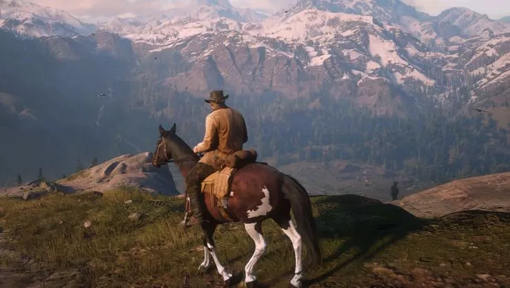
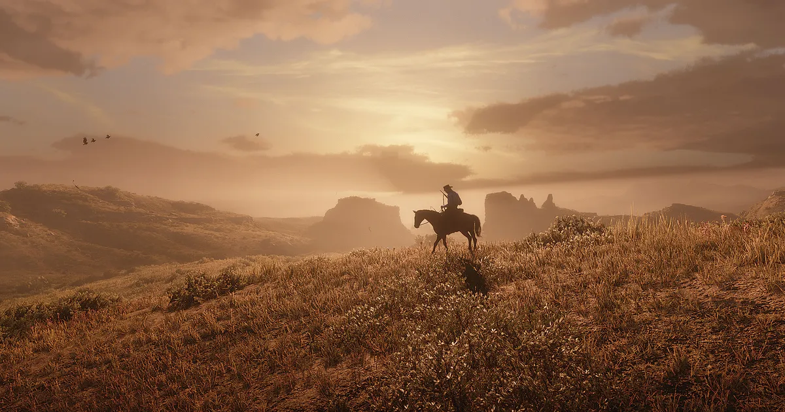
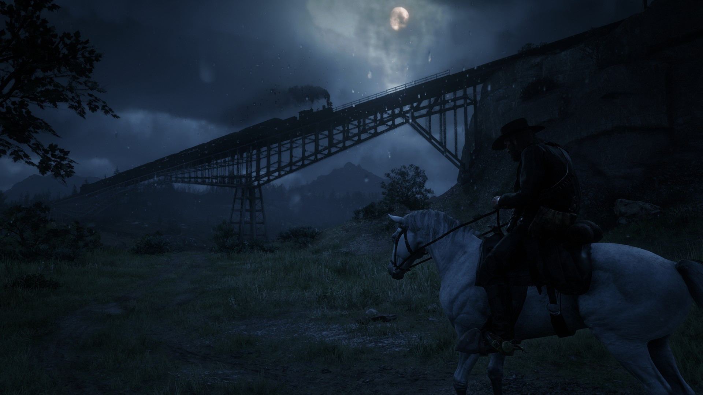
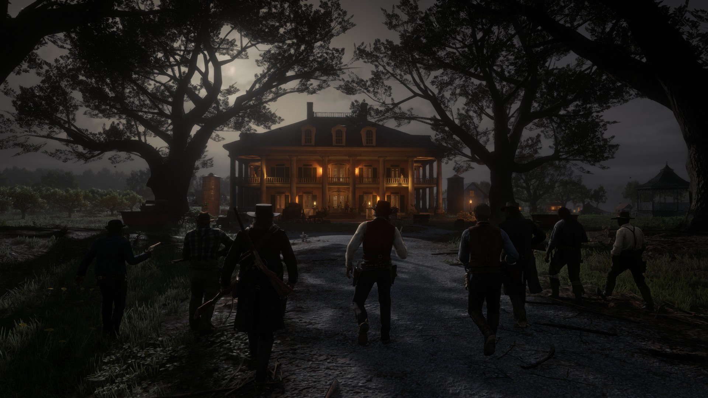

Red Dead Redemption 2, Rockstar Games tarafından geliştirilen ve yayımlanan, 2018 aksiyon-macera temalı video oyunu. Red Dead serisinin üçüncü oyunu oldu ve 2010 Red Dead Redemption oyununun bir prequelidir. Hikâye, 1899'da Batı, Ortabatı ve Güney ABD'nın kurgusal bir temsilinde geçmektedir.
Oyuncu, oyunun başlarında Van der Linde çetesinin bir üyesi olan kanun kaçağı Arthur Morgan'ı oynamaktadır; sonsözde ise yine çetenin bir üyesi olmuş ancak sonradan çete ile yollarını ayırmış John Marston'ı oynamaktadır, John Marston karakterinin yaşam hikâyesi ise serinin ilk oyunu Red Dead Redemption'de devam eder.

Oyun, hem birinci hem de üçüncü şahıs bakış açısıyla sunulur ve oyuncu, interaktif açık dünyasında özgürce dolaşabilir. Oynanış öğeleri arasında çatışmalar, soygunlar, avlanma, ata binme, oyuncu olmayan karakterlerle etkileşim, ahlaki seçimler ve eylemler yoluyla karakterin onur derecesini yükseltip azaltma yer alır.

Red Dead Redemption 2 bir açık dünya oyunudur. Oyunda geçen zaman çetelerin ve silahlı soyguncuların yaşadığı Vahşi Batı döneminin son zamanlarıdır.
Red Dead Redemption 2 bir açık dünya oyunudur. Oyunda geçen zaman çetelerin ve silahlı soyguncuların yaşadığı Vahşi Batı döneminin son zamanlarıdır.
Ana karakter Arthur Morgan üçüncü ve birinci şahıs bakış açısıyla kontrol edilebilmektedir. Oyun tek oyunculu ve çok oyunculu modları içermektedir.
Oyun Red Dead Redemption oyunundan kalan honor (şeref) sistemini kullanmaya devam etti. Bu sistem oyuncunun kontrol ettiği karakterin diğer NPC'ler ile nasıl ilişki kuracağını ve bu ilişkilerin yerleşim yerleri, kasabalar ve diğer gruplar tarafından nasıl tepki göreceğini belirlemektedir.

Red Dead Redemption 2'nin ön yapım çalışmaları serinin bir önceki oyunu olan Red Dead Redemption çıkmadan başlamış olsa da asıl geliştirme süreci Red Dead Redemption Mayıs 2010'da piyasaya sürüldükten sonra başladı.
Red Dead Redemption 2'nin ön yapım çalışmaları serinin bir önceki oyunu olan Red Dead Redemption çıkmadan başlamış olsa da asıl geliştirme süreci Red Dead Redemption Mayıs 2010'da piyasaya sürüldükten sonra başladı.
Oyunun geliştirme süreci başlarda bağımsız Rockstar Stüdyolarının ortaklaşmasıyla ilerlerken bunun koordinasyonu sağlamayı güçleştirdiğinde karar kılan Rockstar Games oyun üzerinde çalışmakta olan bütün stüdyoları tek bir çatı altında topladı. Projede 1600'ü oyun geliştirici olmak üzere toplamda 2000 kişi çalıştı.

Oyunda yaklaşık 300.000 animasyon ve 500.000 satırlık diyalog bulunmaktadır. Oyunda, 700'ü replik sahibi 1200 aktör görev almıştır. Aktörlerle yapılan hareket yakalama çekimleri 2200 günlük bir süreçte tamamlanmıştır. Oyunun yalnızca ana öyküsü 2000 sayfa uzunluğundadır ancak yan görevler, diyaloglar ve oyun içinde bulunan ek materyaller için yazılanlar da eklendiğinde toplam yazılı içerik yaklaşık 240.000 sayfaya çıkmaktadır. Oyunda yer alan her bir NPC için bile ortalama 80 sayfalık yaşam öyküleri yazılmıştır.
Oyunda yaklaşık 300.000 animasyon ve 500.000 satırlık diyalog bulunmaktadır. Oyunda, 700'ü replik sahibi 1200 aktör görev almıştır. Aktörlerle yapılan hareket yakalama çekimleri 2200 günlük bir süreçte tamamlanmıştır. Oyunun yalnızca ana öyküsü 2000 sayfa uzunluğundadır ancak yan görevler, diyaloglar ve oyun içinde bulunan ek materyaller için yazılanlar da eklendiğinde toplam yazılı içerik yaklaşık 240.000 sayfaya çıkmaktadır. Oyunda yer alan her bir NPC için bile ortalama 80 sayfalık yaşam öyküleri yazılmıştır.
Oyun, kullanım hakları yalnızca Rockstar Games'e ait olan RAGE oyun motoruyla geliştirilmiştir.
x